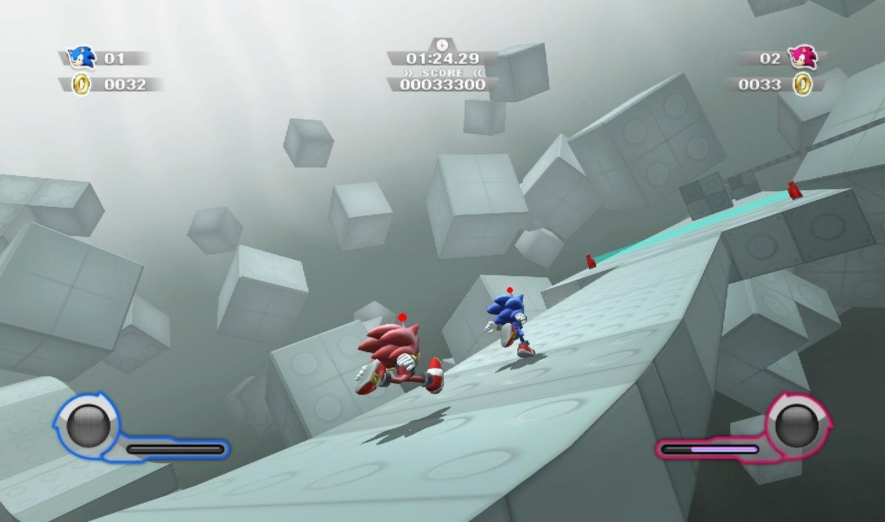
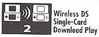

日本Ebten預購Sonic Colors頁面上架，遊戲介紹首先透漏了先前Wii平台神秘截圖的資訊，答案揭曉：2P遊玩 ！兩名玩家一同合作闖關，加上Wisp的Colors Power可使用聯合技。NDS平台則是連線對戰，同樣有Colors Power的特色，來場精采的速度競爭吧。
[align=center]

附件: 100825.jpg
[/align]
可參照預購頁神秘截圖主題：
http://www.sonichub.tw/forum/thread-5534-1-1.html
真是罕見啊...
不過既然有合作闖關那機關一定比正常的關卡來的多......
同樂模式耶!可以跟朋友一起闖關了[:baozi6:] (所以到時候就會有兩個Super Sonic了?)(溜走)
聯合起來的Color Power是什麼樣子呢?
這次竟然有2P合作闖關
莫非是有專屬的關卡來玩?還是所有關卡都能這樣做?
我想這項設定應該和劇情沒有關係吧XD
比較期待的是,採用刺蝟引擎系統的玩法來比快是很有意思的事～
紅色的Sonic! [:smile32:]
合作模式是最好的！
以前大多Sonic的遊戲都以競爭對戰的模式進行，無法找我朋友來玩= =.(他們比較厭惡對戰.)
這次既然有[合作]的話，他們應該會接受！
嗯....
合作闖關阿...
那就跟樂高跌倒類似哩
這樣也可以節省遊玩時間(?)
同時也增加許多樂趣
期待啦
[:baozi19:]
或許共有七種顏色的Sonic？[:baozi5:]
合作闖關的話我猜跟STH2006一樣在非故事模式裡，或許有個教學先讓兩位玩家練習
總之期待～
合作啊
怎麼搞了個紅色Sonic出來，而不用其他角色就好了？（我的Tails啊～）
至於這2P嘛...就拜託你了，老弟 XD
你敢扯我的後腿試試看！= =+
那張圖看起來還是很像開發圖，太簡略了一點
我想實際上遊戲的雙人模式應該不是長這樣吧
有待官方釋出新的情報了
oh yay for recolors!!! ...咦
再多幾個顏色就可以像Shadow那樣, 拼個戰隊出來了[:smile18:]
感覺像開發圖+1
我猜會有難度極高的二人合作任務的可能性...
又不是玩忍外...lol
合作闖關就想到Mario的繁體中文版[:smile19:]
兩人合作比一人闖關有趣多了...只是說這個兩人應該不是在一般的劇情模式吧？
補充一下NDS，有提到用WiFi連線對戰，支援單遊戲片即可遊玩
到時候說明書應該會附上類似這樣的圖：

附件: sample.jpg